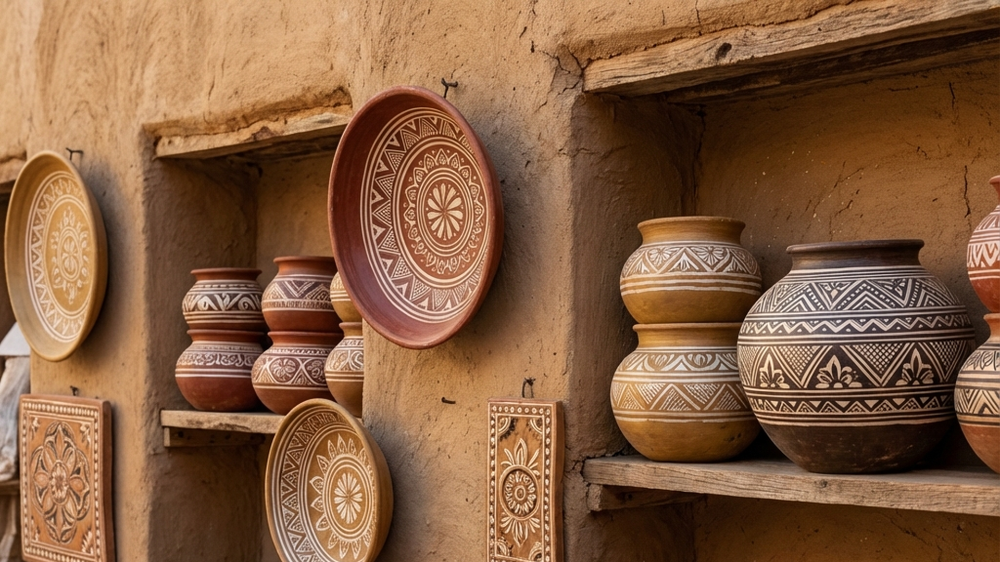

Overview
Kutch pottery is one
of the oldest crafts in the region, with traditions dating back thousands of years. The Kumbhar
(potter) community has perfected the art of transforming local clay into functional vessels,
decorative items, and artistic sculptures. From water pots to elaborate painted terracotta horses,
Kutch pottery reflects the region

History
Archaeological
excavations in Kutch have revealed pottery fragments dating back to the Harappan civilization,
proving that this craft has ancient roots. The Kumbhar community has passed down pottery techniques
through countless generations. Historically, every village had at least one potter family who made
essential household items - water pots, cooking vessels, storage containers, and ritual items for
temples and homes.
Traditional Potter
Kutch potters use a
traditional kick wheel (chakra) that sits at ground level. The potter sits cross-legged and kicks a
heavy stone or concrete disc to spin the wheel. This ancient technique requires immense skill - the
potter
Types of Pottery
- •Matka (water pots) - Traditional clay vessels that keep water cool
- •Terracotta horses - Ritual offerings for folk deities
- •Kitchen vessels - Cooking pots, serving dishes, storage jars
- •Diyas (oil lamps) - Essential for religious ceremonies
- •Decorative figurines - Birds, animals, and human figures
- •Architectural elements - Roof tiles, decorative panels
- •Musical instruments - Clay drums and percussion items
The Clay
Potters in Kutch use
locally sourced clay, which is rich in minerals and gives the pottery its characteristic
reddish-brown color. The clay is collected from riverbeds or specific clay pits, then mixed with
water and kneaded thoroughly to remove air bubbles. Sometimes rice husk or sand is added to prevent
cracking during firing. The quality of clay directly affects the final product
Firing Process
Traditional potters
use open-air kilns or pit firing methods. Dried pottery pieces are stacked carefully, then covered
with layers of cow dung cakes (for slow, even heat) and straw. The kiln is lit and burns for 12-24
hours, reaching temperatures of 800-1000°C. After cooling for a day, the pottery is removed. Modern
potters also use closed brick kilns for more consistent results.
Decorative Techniques
- •Hand-painting with natural pigments
- •Incised patterns carved before firing
- •Slip decoration (liquid clay in different colors)
- •Mirror work embedded in clay
- •Appliqué work - adding clay pieces for 3D effects
- •Burnishing for a smooth, semi-glossy finish
- •Geometric patterns inspired by textile designs
Terracotta Horses of Kutch
The terracotta
horses are among the most iconic pottery items of Kutch. These magnificent sculptures, sometimes
over 6 feet tall, are created as offerings to folk deities, particularly for the deity Hadkai. Each
horse is handbuilt in sections, then assembled and decorated with vibrant colors, mirrors, and
ornate saddles. Creating a life-sized horse can take weeks and requires exceptional skill.
Modern Adaptations
Contemporary potters
are innovating while respecting tradition. They create decorative items for modern homes - planters,
wall hangings, tea sets, and art pieces. Some collaborate with designers to create contemporary
ceramics with traditional techniques. Studio pottery combining Kutch traditions with modern
aesthetics is gaining popularity among collectors and interior designers.
Buying Tips
- •Visit pottery villages like Khavda and Lodai for authentic pieces
- •Check for cracks and imperfections before buying
- •Unglazed terracotta is porous and ideal for water storage
- •Hand-painted items are more valuable than plain pottery
- •Large pieces should be checked carefully for structural strength
- •Ask about food-safe glazes if buying kitchen items
- •Support artisan cooperatives that provide fair prices to potters
Care Instructions
New terracotta water
pots should be soaked overnight before use. Clean with water and soft brush - avoid harsh
detergents. Terracotta is naturally porous and may develop mineral deposits over time, which is
normal. Store decorative pieces away from moisture. Painted pottery should be kept out of direct
sunlight to preserve colors.
Price Range
₹50 - ₹20,000
depending on size and complexity. Small diyas and cups (₹50-200), medium water pots (₹300-800),
large painted vessels (₹1,500-5,000), decorative terracotta horses (₹3,000-20,000+), custom art
pieces (negotiable).
Did You Know?
Kutch pottery traditions are over 4,000 years old
Terracotta water pots keep water 10-15°C cooler than room temperature
A skilled potter can throw a simple pot in under 2 minutes
The largest terracotta horses can weigh over 100 kg
Traditional kilns use cow dung as the primary fuel source
Potters can identify clay quality just by feeling and smelling it
During festivals, demand for diyas increases dramatically
Some ancient pottery techniques have been passed down for 30+ generations
Gallery


